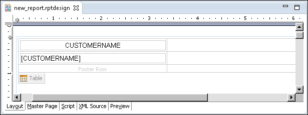
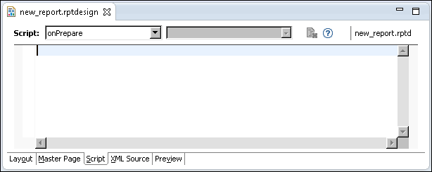
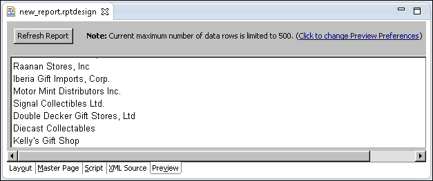

To count the number of customers whose names contain the string Mini, first declare a global counter and set its value to zero. The Table.onCreate method is the most appropriate place to perform this task because Table.onCreate executes before retrieving any rows. In the next task, you conditionally increment this counter in the Row.onCreate( ) method.


